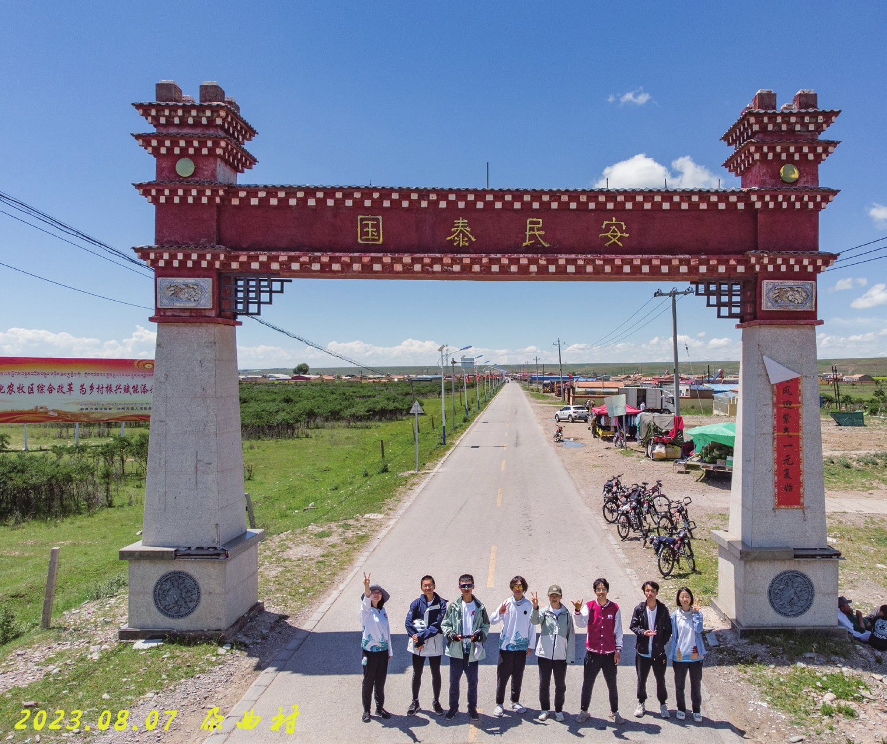
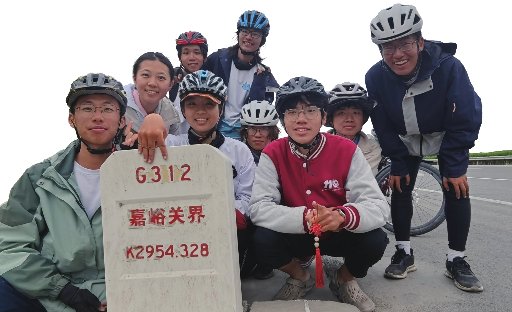

出刚察记
原刊27
2023 年 8 月 9 日，在结束了刚察五天的定点实践之后，我们从刚察出发，准备向北翻越祁连山，进入暑期的最后一段。
我是前旗，在刚察一直和我住一个房间的小哥鹤临是前助。我们从刚察出发先是向东往哈尔盖镇方向。这一条路我是比较熟的。在刚察做定点实践的时候我和小妹曾从刚察县城前往过哈尔盖镇，所以对这条路比较熟悉。包括哪里有卫生间，哪里可以作为休整点等等。等到了哈尔盖镇后向北往热水镇的路九哥和十哥曾为了拍摄普氏原羚走过。这一条路应该都是比较清楚的，在到热水镇前，应该不会出什么问题。
这一天早上是九哥打的早饭前站。早饭后，在骑行团的欢送下，我们从刚察出发。
只是，此次行程一开始没那么顺利，四姐有点发烧，骑的比较慢，所以我们提前收了一次队。当时还碰见了几位社会骑友和我们的旗合影。为了整体的进度，四姐需要骑空车，这也就需要有一个人双驮包。我本想双驮包，但我是前旗，害怕中途矬。最终由十哥担下了双驮包的职责。


我们到达了哈尔盖镇后在加油站休整，此时发了午饭前站。发出不久后发现原定走的县道突然修路，没法走。此时需要我和小哥拿主意，我选择相信高德。以热水镇为目的地，跟着导航走。
一开始走的时候道路还算正常，虽然比一般的柏油路窄一点，但是没什么汽车和行人，也就没什么影响。在路上我们看见了金光闪闪的建筑。在刚察做定点实践时曾听说在哈尔盖镇与海晏县的边界上有一处念青夏格尔山，是当地的圣山，在山上有昆仑神祠。这两个地点在高德上都搜不到，但位置或许与我们当时不远。
出了哈尔盖镇的休息点我选在了黄昌站附近，因为这个站的名字比较像小哥黄昌健的兄弟，加之火车站附近可能可以找到补给和卫生间。然而我们的道路似乎并不能通向黄昌站。不知道那里的车站应该如何运送货物。
到此时一直都是平路，并无什么爬升。我甚至一度以为行者上的坡和起伏路已经被我们以抄近道的方式躲过了。然而接下来我们将迎来本次暑期最神奇的乡道，就好像过山车一样。有时突然有一段剧烈爬升，坡度最高时会到达 9%，到坡顶后又剧烈下降。我对于这样的大起伏还是延续了以往遇到坡就冲的骑行风格，冲到坡顶后用音响整活迎接大家。我当时在坡顶上放的是《通天大道宽又阔》，“刚翻过了几座山”比较符合我们当时的情形。在翻过了这些大起伏后，我们又要过一个全是积水的桥洞。而由于底下都是积水，无法判断路况，骑过去容易摔车。所以我们只能选择光脚通过。刚跋完山，又要涉水，乡道恐怖如斯。
我们在那里一路上还见到不少“鼠片”，大约是车压出来的。只是数量之多令人惊讶。
出了乡道后我们重新回到了国道上。在那个路口我选择收队等后旗。在那里我们遇见了一位甘肃人，骑摩托车翻祁连山来青海旅游。正好走的就是我们需要走的反方向。那位大哥可能以为我们放着国道不走走乡道，不像正经人，对我们有所防备。我很无奈，不过觉得大哥的怀疑很有道理。从此，我开始歧视乡道了。
上了国道后就轻松很多了，虽然是缓上，但是这是我们暑期唯一的一次顺风缓上，所以骑的还算轻松。不久后我们就到了午饭点热水镇。热水镇是依托热水煤炭省级产业园区兴建的镇子。近些年青海强调生态环境保护，加上前一段时间祁连山煤矿出过事故，热水镇也就有些衰败了。
在热水镇吃完午饭并完成午休后，我们很不幸地刚出门就开始下雨。发出的前站和大部队分别待在两个加油站避雨。在约一小时后，雨小了一些，我们又重新出发，并成功登上了海塔尔山垭口。爬上垭口时雨已经停了，只不过气温很低，所以我没有脱下雨衣，这样可以稍微保暖。我们在山顶合影后就向下放坡了。在垭口上有一个牌子，叫做“天境祁连景区全域导览图”，我们在此时就正式翻上祁连山。
只不过由于此前用了一个小时避雨，我们比原定的进度慢了一些。放坡时天色已经有些晚了。山上有点起雾，能见度比较低。过了一段时间后雾路又变成了夜路，能见度更低了。还好我们在放坡过程中没出什么问题，成功到达了祁连县的默勒镇。而此时已经超过了晚上九点，不过这一次还不是暑期到达当日终点最晚的一天。最晚的那一天是张掖到清水，共计 152 公里，是我们的里程高光。


默勒镇是一个挺小的镇子，呈长方形布置着临街店铺，招待一些来祁连山旅游的游客。在晚饭点我被随机数生成了去打明天的早饭前站。但是在这样一个小镇子打到合适的早饭前站是一件不容易的事。一开始找了两家都是做牛肉面的，但以此作为早餐有点单调。我在另一头看到了一家还没关门的店铺，价钱合适，老板人也不错。所以我和老板互留了联系方式，我提前付钱，他在第二天提早半小时上班，以满足我们早起赶路的需求。这使得这次早饭前站大约是整个暑期唯一一次没有提前起的早饭前站。第二天早晨我只需要提前五分钟去找老板通知他上菜。大约起这么早赶路显得我们不像好人，第二天早上七点半吃饭时就有警察叔叔上班来查我们的身份证。他们还告知我们说大冬树山垭口已经修了隧道，走隧道更安全一些。不过我们来这就是为了一睹国家地理标志大冬树山垭口的真容，当然不会走隧道。
第二天早上出发时山里一直有雾，好像到了天境一样，这可能也是天境祁连景区名字的来源吧，在里面感觉和天堂一样。身处群山之间，给人以一种“寄蜉蝣于天地”的感觉。我若是当地的古人，恐怕会崇拜旁边的大山，将其供奉为神明。
这一天我被排为了神秘人，任务是通过各种方式鼓舞大家，但不要被大家猜出来。这个任务算排对人了，因为我最喜欢用骑行音响整活，我们团的六哥夸赞我说这个骑行音响卖给别人 150，卖给你应该300。这一天我一路上挨个和团众陪骑，在旁边放音乐。我放的电影配乐比较多，有加勒比海盗、谍中谍和星球大战等。这些音乐都有一种冒险和希望的感觉。
在我们爬上大冬树山垭口时，天空下起了小雨。迫不得已，我们只能快速在坡顶飞无人机合完影后放坡下去。小哥在收石子路上降落出现问题的无人机时手被桨片划伤了，桨片也因此破裂。遂网购桨片直接发往嘉峪关，我们去嘉峪关取。
大冬树山垭口的海拔有4120m，是我们暑期的最高点。然而我们刚到垭口就得下去，就好像猪八戒吃人参果一样，还没品尝出来是什么味道，果实就进了肚子里。
到祁连县这一天也是我们大姐的最后一天骑行日了，她硕士毕业，需要尽快赶到广州工作。我们在祁连县吃了欢送大姐的蛋糕，第二天一早送她去乘长途汽车。之后开启了我们在一天大强度后的休整日。休整日结束，也就是 8 月 12日时，我们将翻越暑期最后的一个垭口，峨博岭垭口，至此我们就彻底离开了祁连山，重新回到了甘肃境内。